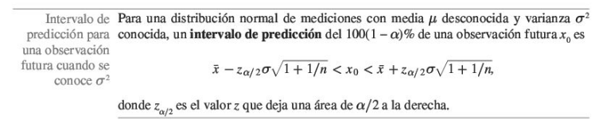

# Definir la función
g <- function(v, n) {
v^n * exp(-v)
}
# Valores de v en el dominio
v <- seq(-0.5, 6.5, length.out = 500)
# Lista de valores de n
n_vals <- c(1, 2, 3, 4)
# Inicializar el gráfico
plot(v, g(v, n_vals[1]), type = "l", lwd = 2,
col = 1, xlim = c(-0.5, 6.5), ylim = c(-1, 5),
xlab = "v", ylab = "g(v)",
main = "g(v) = v^n * exp(-v)")
# Agregar curvas para otros valores de n
for (i in 2:length(n_vals)) {
lines(v, g(v, n_vals[i]), col = i, lwd = 2)
}
# Línea en cero
abline(h = 0, col = "gray", lty = 2)
abline(v = c(0,1,2,3,4), col = "gray", lty = 2)
# Leyenda
legend("topright", legend = paste("n =", n_vals),
col = 1:length(n_vals), lwd = 2)5 Estimación por intervalos
En este capítulo se aborda el problema de la estimación por conjuntos, donde se estudian estimadores que proporcionan un conjunto como estimación de \(\theta\). El resultado de una estimación por conjuntos es una afirmación del tipo \(\theta \in C\), donde \(C = C(\underset{\sim}{x})\) es un subconjunto del espacio paramétrico \(\theta\) que depende de los datos observados \(x\). En el caso de que \(\Theta \subseteq \mathbb{R}\) los conjuntos que se suelen usar para realizar inferencias sobre \(\theta\) son intervalos.
5.1 Intervalos de confianza
Un estimador por intervalos de un parámetro \(\theta\in\Theta \subseteq \mathbb{R}\) es cualquier par de funciones reales \(L(\underset{\sim}{x})\) y \(U (\underset{\sim}{x})\) definidas en el espacio muestral \(\mathcal{X}\) tales que \(L(\underset{\sim}{x})\leq U (\underset{\sim}{x})\) para todo \(\underset{\sim}{x} = (x_1 , \ldots, x_n)\in \mathcal{X}\) . Si se observa el valor \(\underset{\sim}{X}= \underset{\sim}{x}\) , mediante este estimador se hace la inferencia \(L(\underset{\sim}{x})\leq\theta\leq U (\underset{\sim}{x})\). Al intervalo aleatorio \([L(\underset{\sim}{X}),U (\underset{\sim}{X})]\) se le llama estimador por intervalos de \(\theta\) (o intervalo estimador de \(\theta\)), mientras que al valor que ha tomado en la muestra observada \([L(\underset{\sim}{x}),U (\underset{\sim}{x})]\) se le llama estimación por intervalos de \(\theta\) (o intervalo estimación de \(\theta\)).
Example 5.1 Sea \(X_1 , X_2 , X_3 , X_4\) una muestra de tamaño 4 de \(X \sim N(\mu, 1)\). Un estimador por intervalos de \(\mu\) es \([\bar{X}-1, \bar{X} + 1]\). Para cada muestra observada \(x_1 , x_2 , x_3 , x_4\), la estimación por intervalos de \(\mu\) es \([\bar{x}-1, \bar{x} + 1]\).
Obsérvese que si se estima un parámetro \(\theta\) mediante un intervalo, la inferencia es menos precisa que si se estima con un estimador puntual:
ahora nos limitamos a afirmar que el parámetro está en un cierto conjunto, mientras que antes dábamos un valor concreto como estimación suya.
Dado que se pierde en precisión, cabe preguntarse qué se gana al estimar un parámetro \(\theta\) mediante un intervalo, respecto a hacerlo con un estimador puntual. La respuesta es que se gana en confianza:
en general, la probabilidad de que un estimador sea exactamente igual al parámetro que desea estimar es 0, mientras que la probabilidad de que un estimador por intervalos cubra al parámetro será positiva.
Example 5.2 Sea \(X_1 , X_2 , X_3 , X_4\) una muestra de tamaño 4 de \(X \sim N(\mu, 1)\). Un estimador por intervalos de \(\mu\) es \([\bar{X}-1, \bar{X} + 1]\). Para cada muestra observada \(x_1 , x_2 , x_3 , x_4\), la estimación por intervalos de \(\mu\) es \([\bar{x}-1, \bar{x} + 1]\).
Sea \(X_1 , X_2 , X_3 , X_4\) una muestra de tamaño 4 de \(X \sim N(\mu, 1)\).
I. \(P(\bar{X}=\mu)=0\).
II.\(P[\bar{X}-1, \bar{X} + 1]=0.9544\).
A costa de algo de precisión, el paso de un estimador puntual a uno por intervalos ha permitido aumentar la confianza que tenemos en que sea correcta la afirmación hecha en la inferencia.
Definition 5.1 Se llama probabilidad de cobertura de un estimador por intervalos \([L(\underset{\sim}{x}),U (\underset{\sim}{x})]\) del parámetro \(\theta\) a la probabilidad de que ese intervalo aleatorio cubra al verdadero valor del parámetro \(\theta\): \[P_\theta(\theta\in[L(\underset{\sim}{x}),U (\underset{\sim}{x})] )\] Obsérvese que esa probabilidad de cobertura puede variar con \(\theta\). Se llama coeficiente de confianza del intervalo \([L(\underset{\sim}{x}),U (\underset{\sim}{x})]\) como estimador del parámetro \(\theta\) al ínfimo de las probabilidades de cobertura: \[\inf_{\theta\in\Theta}P_\theta(\theta\in[L(\underset{\sim}{x}),U (\underset{\sim}{x})] ).\] Intervalo de confianza es el nombre que recibe usualmente un estimador por intervalos junto con su coeficiente de confianza.
También se nombra así a veces a la estimación a que da lugar el estimador por intervalos aplicado a una muestra concreta.
Además de \(C(\underset{\sim}{x})\), se usará también la notación \(IC_{1-\alpha}(\theta)\) se usará para referirse a un intervalo de confianza \((1-\alpha)\) para \(\theta\).
Si se desea construir un intervalo para una transformación invertible \(\tau(\theta)\) del parámetro y \([L(\underset{\sim}{x}),U (\underset{\sim}{x})]\) es un intervalo de confianza \((1-\alpha)\) para \(\theta\), entonces el intervalo \([\tau(L(\underset{\sim}{x})),\tau(U (\underset{\sim}{x}))]\) es un intervalo de confianza \((1- \alpha)\) para \(\tau(\theta)\).
5.2 Métodos para construir intervalos de confianza
5.2.1 Inversión de un contraste de hipótesis
Como veremos a continuación, hay una estrecha relación entre la estimación por intervalos y los contrastes de hipótesis. En general, se puede decir que cada método de construcción de un intervalo de confianza corresponde a un método de contraste de un hipótesis, y viceversa.
Example 5.3 Sea \(X_1 ,\ldots, X_n\) muestra aleatoria simple de \(X\sim N(\mu,\sigma^2)\) con \(\sigma^2\) conocido. Se desea contrastar \(H_0:\mu = \mu_0\) frente a \(H_1 : \mu\neq\mu_0\).
Para hacer el contraste a nivel \(\alpha\) el test insesgado uniformemente de máxima potencia rechaza \(H_0\) si \(\mid \bar{x}-\mu_0\mid > z_{\alpha/2}\sigma/\sqrt{n}\), es decir, la región del espacio muestral \(\mathcal{X}\) en donde se acepta \(H_0\) es el conjunto de \(\underset{\sim}{x}\) tales que \[\bar{x}-z_{\alpha/2}\sigma/\sqrt{n}\leq\mu_0\leq \bar{x}+z_{\alpha/2}\sigma/\sqrt{n}\]
5.2.2 Intervalos de confianza para la media

5.2.3 Intervalos de confianza para la diferencia de medias


 ### Intervalos de confianza para proporciones \(p\).
### Intervalos de confianza para proporciones \(p\).
5.2.4 Intervalos de confianza para diferencia de proporciones.

5.2.5 Intervalos de confianza para \(\sigma^2\)
5.2.6 Intervalos de confianza para comparación de varianzas.

5.3 Test de la razón de verosimilitudes
Sea \(X_1 ,\ldots, X_n\) muestra aleatoria simple de \(X\), variable aleatoria con función de densidad (o de probabilidad) \(f(x\mid \theta)\) para algún \(\theta \in \Theta\). Se desea hacer el contraste
\[\left\{ \begin{array}{lcc} H_0 & : & \theta \in\Theta_0 \\ \\ H_1 & : & \theta \in\Theta_1 \end{array} \right.\] donde \(\Theta_0\cup\Theta_1=\Theta\), \(\Theta_0\cap\Theta_1=\emptyset.\) Se define el estadístico de la razón de verosimilitudes como
\[\lambda=\lambda(\underset{\sim}{x})=\frac{\max_{\theta \in \Theta_0}L(\theta \mid \underset{\sim}{x})}{\max_{\theta \in \Theta}L(\theta \mid \underset{\sim}{x})}\]
El test de la razón de verosimilitudes (también llamado test de la razón de verosimilitudes generalizado, para distinguirlo del test de Neyman- Pearson, o test de la razón de las máximas verosimilitudes) establece una región crítica de la forma \[C=\{\underset{\sim}{x}:\lambda(\underset{\sim}{x})\leq A\}\] para alguna constante \(A\) que se determinará para que el test tenga el tamaño \(\alpha\) deseado.
La idea intuitiva que sustenta este método de contraste es simple. Observe que \(0 \leq \lambda \leq 1\) y que cuanto más cercano a \(1\) sea el valor de \(\lambda\), más verosímil es que \(\theta \in \Theta_0\), mientras que cuanto más se aleje \(\lambda\) de 1, más creíble será la hipótesis alternativa \(\theta \in \Theta_1\).
Example 5.4 Sea \(\underset{\sim}{x}\sim \exp\{\frac{1}{\lambda}\}\), \(\lambda=E(X)\), se quiere encontrar la forma de la región crítica utilizando el principio de la razón de verosimilitudes del test \[\left\{ \begin{array}{lcc} H_0 & : & \lambda=\lambda_0 \\ \\ H_1 & : & \lambda\neq\lambda_0 \end{array} \right.\]
Proof. Recordemos que la función de verosimilitud es \[\begin{align} L(\lambda\mid\underset{\sim}{x})&=\prod_{i=1}^{n}\left(\frac{1}{\lambda}\exp\left\{-\frac{1}{\lambda}x_i\right\}\right)\nonumber\\ &=\left(\frac{1}{\lambda}\right)^n\exp\left\{-\frac{1}{\lambda}\sum_{i=1}^{n}x_i\right\} \end{align}\] Además, el estimador de máxima verosimilitud (emv) es \(\hat{\lambda}=\bar{x}\) Luego, el estadístico por la razón de verosimilitudes
\[\begin{align} \Lambda(\underset{\sim}{x})&=\frac{\max_{\lambda \in \Theta_0}L(\lambda \mid \underset{\sim}{x})}{\max_{\lambda \in \Theta}L(\lambda \mid \underset{\sim}{x})}\nonumber\\ &=\frac{\left(\frac{1}{\lambda_0}\right)^n\exp\left\{-\frac{1}{\lambda_0}\sum_{i=1}^{n}x_i\right\}}{\left(\frac{1}{\bar{x}_n}\right)^n\exp\left\{-\frac{1}{\bar{x}_n}\sum_{i=1}^{n}x_i\right\}}\nonumber\\ &=\frac{\left(\frac{1}{\lambda_0}\right)^n\exp\left\{-\frac{1}{\lambda_0}\sum_{i=1}^{n}x_i\right\}}{\left(\frac{1}{\frac{\sum_{i=1}^{n}x_i}{n}}\right)^n\exp\left\{-\frac{1}{\frac{\sum_{i=1}^{n}x_i}{n}}\sum_{i=1}^{n}x_i\right\}}\nonumber\\ \end{align}\]
\[\begin{align} \Lambda(\underset{\sim}{x})&=\frac{\max_{\lambda \in \Theta_0}L(\lambda \mid \underset{\sim}{x})}{\max_{\lambda \in \Theta}L(\lambda \mid \underset{\sim}{x})}\nonumber\\ &=\left(\frac{\sum_{i=1}^{n}x_i}{n\lambda_0}\right)^n\frac{\exp\left\{-\frac{1}{\lambda_0}\sum_{i=1}^{n}x_i\right\}}{\exp\left\{-n\right\}}\nonumber\\ &=\left(\frac{1}{n}\right)^n\left(\frac{\sum_{i=1}^{n}x_i}{\lambda_0}\right)^n\frac{\exp\left\{-\frac{1}{\lambda_0}\sum_{i=1}^{n}x_i\right\}}{\exp\left\{-n\right\}}\nonumber\\ \end{align}\]
Si \(\Lambda(\underset{\sim}{x})\leq A\) para alguna constante \(A\) que haga el test de tamaño \(\alpha\), se tiene que
\[\begin{align} \left(\frac{\sum_{i=1}^{n}x_i}{\lambda_0}\right)^n\exp\left\{-\frac{1}{\lambda_0}\sum_{i=1}^{n}x_i\right\}\leq A^* \end{align}\]
donde \(A^*=An^n\exp\left\{-n\right\}.\)
Para un valor fijo \(\lambda_0\), la región de NO rechazo del test región de aceptaciónes
\[\begin{align} \label{RA} A(\lambda_0)=\left\{\underset{\sim}{x}:\left(\frac{\sum_{i=1}^{n}x_i}{\lambda_0}\right)^n\exp\left\{-\frac{1}{\lambda_0}\sum_{i=1}^{n}x_i\right\}\geq k^*\right\} \end{align} \tag{5.1}\]
donde la constante \(k^*\) se elige para que el test tenga tamaño \(\alpha\), o lo que es lomismo, para que \[P_{\alpha}(\underset{\sim}{x}\in A(\lambda_0))=1-\alpha\]
5.3.1 Cantidades pivotales.
Uno de los métodos más comunes de construcción de intervalos de confianza es el uso de cantidades pivotales.
Sea \(\underset{\sim}{x} = (X_1 ,\ldots , X_n)\) una m.a.s. de \(X\sim F(x;\theta)\). Una función \(Q(\underset{\sim}{x} , \theta)\) de la muestra y del parámetro es una cantidad pivotal si la distribución de probabilidad de \(Q(\underset{\sim}{x} , \theta)\) no depende del parámetro \(\theta\), es decir, \(Q(\underset{\sim}{x} , \theta)\) tiene la misma distribución para cualquier valor de \(\theta\).
Dada una cantidad pivotal \(Q(\underset{\sim}{x} , \theta)\), para cualquier conjunto \(A\) del espacio imagen de \(Q\) se tiene que \(P_\theta (Q(\underset{\sim}{x} , \theta) \in A)\) no depende de \(\theta\). Por lo tanto si se elige un conjunto \(A_\alpha\) tal que
\[P_\theta (Q(\underset{\sim}{x} , \theta) \in A)=1-\alpha,\] para todo \(\theta\), y se observa la muestra \(\underset{\sim}{X} = \underset{\sim}{x}\), entonces el conjunto \[C(\underset{\sim}{x}) = \{\theta: Q(\underset{\sim}{x} , \theta) \in A\}\] es un conjunto de confianza \(1-\alpha\) para \(\theta\).
En la práctica, la forma en la que se construye un intervalo de confianza a partir de una cantidad pivotal es la siguiente. Supondremos que \(Q(\underset{\sim}{x}, \theta) \in \mathbb{R}\) y \(\theta \in \mathbb{R}\). Para un valor \(\alpha\) dado, se buscan números a y b tales que \[P_\theta(a\leq Q(\underset{\sim}{x}, \theta)\leq b)=1-\alpha,\] Observar que \(a\) y \(b\) no dependen de \(\theta\) por ser Q cantidad pivotal, y que la elección de a y b no será única en general.
Para cada \(\theta_0\) , el conjunto \[A(\theta_0)=\{\underset{\sim}{x}:a\leq Q(\underset{\sim}{x}, \theta)\leq b\}.\] es la región de aceptación de un test de tamaño \(\alpha\) para contrastar \(H_0 : \theta = \theta_ 0\) basado en el estadístico \(T ( \underset{\sim}{x}) = Q(\underset{\sim}{x}, \theta_0)\). Invirtiendo este contraste obtenemos el conjunto de confianza \(1-\alpha\) para \(\theta\): \[C(\underset{\sim}{x})=\{\theta:a\leq Q(\underset{\sim}{x}, \theta)\leq b\}.\]
Example 5.5 Obsérvese en Equation 5.1 que la expresión de la región de aceptación depende de la muestra y del parámetro sólo a través de \(v =\frac{\sum_{i=1}^{n} x_i}{\lambda_0}\). Además, la distribución de \(v =\frac{\sum_{i=1}^{n}X_i}{\lambda_0}\) no depende del parámetro \(\lambda_0\) : \(\sum_{i=1}^{n}X_i\sim \gamma(n,\lambda_0)\) bajo \(H_0\) , luego \(V\sim \gamma(n,\lambda_0)\). De esto se sigue que el valor \(k^{*}\) es el mismo para todo \(\lambda_0\).
Invirtiendo la región de aceptación se obtiene el conjunto de confianza \(1-\alpha\): \[C(\underset{\sim}{x})=\left\{\lambda:\left(\frac{\sum_{i=1}^{n}x_i}{\lambda}\right)^n\exp\left\{-\frac{1}{\lambda}\sum_{i=1}^{n}x_i\right\}\geq k^*\right\}.\]
Sea \(g(v)=v^n\exp\{-v\}\)
- \(g\) es positiva en todo \(\mathbb{R}^{+}\).
- \(g\) vale cero en \(v=0\).
- \(g\) tiende a cero si \(v\) tiende a infinito.
- \(g\) tiene un único punto crítico en \(v=n\).
- \(g\) tiene un único máximo en \(v=n\) (\(n=1\) en el ejemplo gráfico).
- Los conjuntos de la forma \(\{v\geq0: g(v)\leq k^*\}\), \(k^*\leq g(n)=n^n\exp\left\{-n\right\}\), son intervalos de la forma \([l,u]\), donde \(l\leq n\leq u\) y \(g(l)=g(u)=k^*\).
De ello se deduce que \(A(\lambda_0)\) es un intervalo para cualquier valor de \(\lambda_0\), y que los conjuntos de confianza \(C(\underset{\sim}{x})\) también son intervalos para cualquier valor de \(\sum_{i=1}^{n}x_i\). Así pues, el intervalo de confianza obtenido será de la forma
\[\begin{align} C(\underset{\sim}{x})&=\left\{\lambda:l\leq v\leq u\right\}\nonumber\\ &=\left\{\lambda:l\leq \frac{\sum_{i=1}^{n}x_i}{\lambda}\leq u\right\}\nonumber\\ &=\left\{\lambda:\frac{1}{u}\leq \frac{\lambda}{\sum_{i=1}^{n}x_i}\leq \frac{1}{l}\right\}\nonumber\\ &=\left\{\lambda:L\left(\sum_{i=1}^{n}x_i\right)\leq \lambda\leq U\left(\sum_{i=1}^{n}x_i\right)\right\}\nonumber\\ \end{align}\]
con
| Límite inferior | Límite superior |
|---|---|
| \[L\!\left(\sum_{i=1}^{n}x_i\right) = \frac{\sum_{i=1}^{n}x_i}{u}\] | \[U\!\left(\sum_{i=1}^{n}x_i\right) = \frac{\sum_{i=1}^{n}x_i}{l}\] |
Los valores \(l\) y \(u\) son las soluciones del sistema de ecuaciones no lineales
\[\left\{ \begin{array}{lcc} g(l) =g(u)& \\ \\P(l\leq V \leq u)=1-\alpha & \end{array} \right.\]
Si \(n = 2\), \(V\sim \gamma(2, 1)\) y el sistema se transforma en éste: \[\left\{ \begin{array}{lcc} l^2e^{-l} =u^2e^{-u} & \\ \\e^{-l}(l+1)-e^{-u}(u+1)=1-\alpha & \end{array} \right.\] Si hacemos \(1-\alpha = 0.9\) y resolvemos el sistema, se obtiene \(l = 0.4386\) y \(u =5.4945\), luego el intervalo de confianza \(0.90\) para \(\lambda\) es
\[\left[0.182\sum_{i=1}^{2} x_i;2.28\sum_{i=1}^{2} x_i\right]=\left[0.364\bar{X}_2;4.56\bar{X}_2\right]\] En el ejemplo anterior el intervalo de confianza construido se basó en
\[\begin{align} V=\frac{\sum_{i=1}^{n}X_i}{\lambda} \end{align}\]
cuya distribución es \(\gamma(n, 1)\) para cualquier valor de \(\lambda\), así que \(V\) es una cantidad pivotal y el intervalo de confianza construido allí es un ejemplo de intervalo basado en una cantidad pivotal.\ Si se define \(T = 2V\) , entonces \(T\sim \gamma(n, 2)\), es decir \(T\sim \chi^2_{2n}\) . Es más fácil encontrar tabulada la distribución \(\chi^2_{2n}\) que la distribución gamma, por lo que \(T\) resultará más útil en la práctica.
Example 5.6 En el ejemplo anteriormente mencionado \[Q(\underset{\sim}{x},\lambda)=\frac{2\sum_{i=1}^{n}X_i}{\lambda}\sim\chi^2_{2n}\] Así que podemos elegir
| (a) | (b) |
|---|---|
| \[a = \chi^2_{2n,\,1-\alpha/2}\] | \[b = \chi^2_{2n,\,\alpha/2}\] |
En este caso \(g_{\underset{\sim}{x}}(\lambda)=Q(\underset{\sim}{x},\lambda)=\frac{2\sum_{i=1}^{n}X_i}{\lambda}\). Es decir, \(g_{\underset{\sim}{x}}\) es invertible y decreciente, luego el intervalo de confianza de \(1-\alpha\) para \(\lambda\) será
\[\begin{align} C(\underset{\sim}{x})&=\left\{\lambda:a\leq g_{\underset{\sim}{x}}(\lambda)\leq b\right\}\nonumber\\ &=\left\{\lambda:a\leq \frac{2\sum_{i=1}^{n}x_i}{\lambda}\leq b\right\}\nonumber\\ &=\left\{\lambda:\frac{1}{b}\leq \frac{\lambda}{2\sum_{i=1}^{n}x_i}\leq \frac{1}{a}\right\}\nonumber\\ &=\left\{\lambda:g_{\underset{\sim}{x}}^{-1}\left(b\right)\leq \lambda\leq g_{\underset{\sim}{x}}^{-1}\left(a\right)\right\}\nonumber\\ \end{align}\]
con
| Expresión con (b) | Expresión con (a) |
|---|---|
| \[g_{\underset{\sim}{x}}^{-1}(b) = \frac{2\sum_{i=1}^{n} x_i}{\chi^2_{2n,\,\alpha/2}}\] | \[g_{\underset{\sim}{x}}^{-1}(a) = \frac{2\sum_{i=1}^{n} x_i}{\chi^2_{2n,\,1-\alpha/2}}\] |
En el caso de \(n = 2\) y \(\alpha = 0.1\), \(\chi^2_{4, 0.05} = 9,49\) y \(\chi^2_{4, 0.95} = 0.71\), luego el intervalo de confianza \(0.90\) es
\[\left[\frac{4\bar{X}_2}{9.49};\frac{4\bar{X}_2}{0.71}\right]=\left[0.4215\bar{X}_2;5.63\bar{X}_2\right]\]
5.3.2 Intervalos de verosimilitud.
Supongamos que los datos (eventos observados) \(E\) de un experimento tiene probabilidad \(P(E;\theta)\) la cual depende de un parámetros fijo pero desconocido \(\theta\).
El estimador de máxima verosimilitud \(\hat{\theta}\) es el valor de \(\theta\) el cual máximiza \(P(E;\theta)\). Este valor es el más probable o más plausible de \(\theta\) en el sentido de que esto máximiza la probabilidad de que ha sido observado.
Las probabilidades relativas de otros valores de \(\theta\) tal que \(P(E;\theta)\) es tan cercano o casi tan grande como \(P(E;\hat{\theta})\) son justamente plausible en que ellos explican los datos casi tan bien como \(\hat{\theta}\) lo hace.
Valores de \(\theta\) para los cuales \(P(E;\theta)\) es mucho menos que \(P(E;\hat{\theta})\) son implausibles porque estos hacen que lo que se ha observado sea mucho menos probable que lo que hace \(\hat{\theta}\).
Definition 5.2 (Función de verosimilutud relativa de \(\theta\)) La Función de verosimilutud relativa de \(\theta\) (RLF), está definida como el ratio de la función de verosimilitud Función de verosimilutud relativa de \(L(\theta)\) con el máximo \(L(\hat{\theta})\): \[\begin{align} R(\theta)=\frac{L(\theta)}{L(\hat{\theta})} \end{align}\] Ya que \(L(\theta)=CP(E;\theta)\) donde \(C\) no depende de \(\theta\), se sigue
\[\begin{align} R(\theta)=\frac{CP(E;\theta)}{CP(E;\hat{\theta})}=\frac{P(E;\theta)}{P(E;\hat{\theta})} \end{align} \tag{5.2}\]
La constante multiplicativa \(C\) en la ecuación Equation 5.2 se cancela, así que \(R(\theta)\) no se verá afectada por esta constante. Observe que \(L(\theta)\leq L(\hat{\theta})\) para todo \(\theta\), así que se sigue \(0\leq R(\theta)\leq1\).
Definition 5.3 (La función Logverosimilitud relativa) \[\begin{align} r(\theta)&=\log\left(R(\theta)\right)\nonumber\\ &=log\left(\frac{P(E;\theta)}{P(E;\hat{\theta})}\right)\nonumber\\ &=log\left(P(E;\theta)\right)-log\left(P(E;\hat{\theta})\right)\nonumber\\ &=log\left(\ell (\theta)\right)-log\left( \ell(\hat{\theta})\right) \end{align} \tag{5.3}\]
Donde \(\ell(\theta)\) es la función logverosimilitud. Ya que \(0\leq R(\theta)\leq1\), tenemos que \(-\infty\leq r(\theta)\leq 0\) para todos los valores parametrales posibles. Sea \(\theta_1\) denota algún valor particular del parámetro, entonces
- Si \(R(\theta_1)=0.1\), entonces \(\theta_1\) es más bien un valor parametral inverosimil, porque los datos son \(10\) veces más probables cuando \(\theta=\hat{\theta}\) que cuando \(\theta=\theta_1\).
- Si \(R(\theta_1)=0.5\), entonces \(\theta_1\) es más bien un valor parametral justamente plausible, porque los datos son \(2\) veces más probables cuando \(\theta=\hat{\theta}\) que cuando \(\theta=\theta_1\).
Definition 5.4 (Regiones de verosimilitud e intervalos) El conjunto de los valores \(\theta\) para el cual \(R(\theta)\geq p\) un \(100\% p\) región de verosimilitud para \(\theta\). Usualmente el \(100\% p\) región verosimil consistirá de un intervalo de valores reales, y entonces este es llamado \(100\% p\) intervalo verosímil (LI) para \(\theta\).
Usualmente consideramos \(50\%\), \(10\%\) y \(1\%\) intervalos verosímiles o regiones.
| \[LI\] | \[\text{Dentro}\] | \[\text{Fuera}\] |
|---|---|---|
| \(50\%\) | \[\text{Evento muy probable}\] | |
| \(10\%\) | \[\text{Evento posible}\] | \[\text{Evento imposible}\] |
| \(1\%\) | \[\text{Evento muy imposible}\] |
El \(14.7\%\) y \(3.6\%\) de los intervalos de verosimilitud son algunas veces calculado por su analogía al \(95\%\) y el \(99\%\) de intervalos de confianza. a. Como \(log(0.5)=-0.69\), tenemos que \(r(\theta_1) \geq -0.69\), \(logR(\theta_1)\geq log(0.5)\), luego es semejante \(R(\theta_1)\geq 0.5\), los datos son 2 veces más probables cuando \(\theta=\hat{\theta}\), que cuando \(\theta=\theta_1\) (Más del \(50\%\) de la probabilidad máxima posible bajo el modelo). b. Como \(log(0.1)=-2.30\), tenemos que \(r(\theta_1) \geq -2.30\), \(logR(\theta_1)\geq log(0.1)\), luego es semejante \(R(\theta_1)\geq 0.1\), los datos son 10 veces más probables cuando \(\theta=\hat{\theta}\), que cuando \(\theta=\theta_1\) (Más del \(10\%\) de la probabilidad máxima posible bajo el modelo). c. Como \(log(0.01)=-4.61\), tenemos que \(r(\theta_1) \geq -4.61\), \(logR(\theta_1)\geq log(0.01)\), luego es semejante \(R(\theta_1)\geq 0.01\), los datos son 100 veces más probables cuando \(\theta=\hat{\theta}\), que cuando \(\theta=\theta_1\) (Más del \(1\%\) de la probabilidad máxima posible bajo el modelo).
Example 5.7 Supongamos que deseamos entimar \(\theta\), la proporción de personas con tuberculosis en una gran población homogénea.Para esto nosotros seleccionamos aleatoriamente \(n\) individuos y encontramos \(x\) de ellos que tienen la enfermedad. Ya que la población es grande y homogénea, nosotros asumimos que los \(n\) individuos son examinados de manera independiente y que cada uno tiene probabilidad \(\theta\) de tener tuberculosis. La probabilidad del evento observado \(E\) es entonces \[\begin{align} P(E;\theta)&=P(\mbox{$x$ de $n$ tienen tuberculosis}) \nonumber\\ &=\binom{n}{x}\theta^x(1-\theta)^{n-x} \end{align}\]
donde \(0\leq \theta \leq 1\). Ver
- Determine el estimador de máxima verosimilitud e interprete en el contexto del problema.
- Suponga que de \(100\) personas son examinadas, tres son encontrados con tuberculosis. Sobre la base de estas observaciones, ¿cuales valores de \(\theta\) son plausibles? Para responder, utilice el método gráfico de la función de verosimilitud relativa para hallar los intervalos de verosimilitud (IL) del \(1\%\), \(10\%\) y \(50\%\).
- Suponga que de \(200\) personas son examinadas, seis son encontrados con tuberculosis. Sobre la base de estas observaciones, ¿cuales valores de \(\theta\) son plausibles? Para responder, utilice el método gráfico de la función de verosimilitud relativa para hallar los intervalos de verosimilitud (IL) del \(1\%\), \(10\%\) y \(50\%\).
- Compare b y c. con las dos gráficas en el mismo cuadro de inspección.
5.4 Ejercicios
Exercise 5.1 En \(1000\) lanzamientos de una moneda, aparecen \(560\) caras y \(440\) sellos aparecen. ¿Es razonable asumir que la moneda es justa \(\left(p=\frac{1}{2}\right)\)?
Exercise 5.2 En una ciudad dada se asume que el número de accidentes automovilísticos en un año dado sigue una distribución Poisson. En años pasados el promedio del número de accidentes por año fue de \(15\), y este año fue de \(10\). ¿Es justificada la afirmación que dice que la tasa de siniestralidad ha disminuido?
Exercise 5.3 Sea \(X\) es una variable aleatoria cuya función de masa de probabilidad (fmp) bajo \(H_0\) y \(H_1\) está dado por
| \(f(x \mid \cdot) \backslash x\) | 1 | 2 | 3 | 4 | 5 | 6 | 7 |
|---|---|---|---|---|---|---|---|
| \(f(x \mid H_0)\) | 0.01 | 0.01 | 0.01 | 0.01 | 0.01 | 0.01 | 0.94 |
| \(f(x \mid H_1)\) | 0.06 | 0.05 | 0.04 | 0.03 | 0.02 | 0.01 | 0.79 |
Use el Lema de Neyman Pearson para encontrar la prueba más potente para \(H_0\) versus \(H_1\) con tamaño \(\alpha=0.04\). Compute la probabilidad del error tipo II para esta prueba. En otras palabras establezca los siguientes resultados
Establezca los diferentes ratios \(\frac{f(x\mid H_1)}{f(x\mid H_0)}\). ¿Qué puede decir de estos ratios en función de \(x\)?
¿Para qué valores de \(x\) se rechaza la hipótesis nula \(H_0\)?
Para conseguir un tamaño de prueba \(\alpha\), se necesita escoger un \(c\) de tal manera que \(P(X\leq c\mid H_0)=\alpha\). Para el presente problema, calcular \(c\) dado que la prueba uniforme más potente tiene tamaño \(\alpha=0.04\).
Calcule la probabilidad del error tipo II.
Exercise 5.4 En cada una de las siguientes situaciones, calcule el \(p\)-valor de los datos observados. Para esto, determine la función \(\alpha\) en función del parámetro de interés en \(\Theta_0\). Grafique \(\alpha\) y señale en la gráfica el \(p\) valor.
Para la prueba \(H_0:\theta\leq\frac{1}{2}\) versus \(H_1:\theta>\frac{1}{2}\), \(7\) éxitos son observados en \(10\) ensayos Bernoulli.
Para la prueba \(H_0:\lambda\leq1\) versus \(H_1:\lambda>1\),se observa \(X=3\), donde \(X\sim Pois(\lambda)\).
Para la prueba \(H_0:\lambda\leq 1\) versus \(H_1:\lambda>1\), se observa \(X_1=3\),\(X_2=5\), \(X_3=1\), donde \(X_i\sim Pois(\lambda)\), con \(i=1,2,3\) independientes.
Exercise 5.5 Use el corolario 7 sobre contrastes uniformemente más potentes de la página 161 del pdf de las notas Gómez, Guadalupe, & Delicado, Pedro para resolver el siguiente problema. Sea \(X\sim binom(2,\theta)\). Se quiere probar \(H_0:\theta=\frac{1}{2}\) versus \(H_1:\theta=\frac{3}{4}\).
Calcule los diferentes ratios de la función de masa de probabilidad.
Del corolario 7, determine que pasa con una elección \(\frac{3}{4}<A(\theta_1)<\frac{9}{4}\), el lema de Neyman Pearson dice que el test que rechaza \(H_0\) si \(X=\_\_\_\_\_\_\) es la prueba uniformente más potente (UMP) a nivel \(\alpha=\_\_\_\_\_\_\). Complete los espacios en blanco y justifique sus respuestas.
Del corolario 7, determine que pasa con una elección \(\frac{1}{4}<A(\theta_1)<\frac{3}{4}\), el lema de Neyman Pearson dice que el test que rechaza \(H_0\) si \(X=\_\_\_\_\_\_\) es la prueba uniformente más potente (UMP) a nivel \(\alpha=\_\_\_\_\_\_\). Complete los espacios en blanco y justifique sus respuestas.
Del corolario 7, determine que pasa con una elección \(A(\theta_1)<\frac{1}{4}\), el lema de Neyman Pearson dice que el test que rechaza \(H_0\) si \(X=\_\_\_\_\_\_\) es la prueba uniformente más potente (UMP) a nivel \(\alpha=\_\_\_\_\_\_\). Complete los espacios en blanco y justifique sus respuestas.
Del corolario 7, determine que pasa con una elección \(A(\theta_1)>\frac{9}{4}\), el lema de Neyman Pearson dice que el test que rechaza \(H_0\) si \(X=\_\_\_\_\_\_\) es la prueba uniformente más potente (UMP) a nivel \(\alpha=\_\_\_\_\_\_\). Complete los espacios en blanco y justifique sus respuestas.
Exercise 5.6 A dos grupos de ratas diabéticas se les suministra dos dosis de insulina (alto y bajo) para verificar la capacidad de fijación de esta hormona. Se obtuvieron los siguientes datos.
| Grupo | Información |
|---|---|
| Dosis baja | \(n_1 = 8\), \(\bar{x}_1 = 1.98\), \(s_1 = 0.51\) |
| Dosis alta | \(n_2 = 13\), \(\bar{x}_2 = 1.30\), \(s_1 = 0.35\) |
Suponga que las varianzas son iguales. Determine un intervalo de confianza del \(95\%\) para la diferencia en la capacidad promedio verdadera de fijación de la insulina entre las dos muestras.
Exercise 5.7 En el estudio Germination and Emergence of Broccoli, realizado por el Departamento de horticultura del Virginia Tech, un investigador encontró que a \(5^\circ C\), de \(20\) semillas de brócoli germinaron \(10\); en tanto que a \(15^\circ C\), de \(20\) semillas germinaron \(15\). Calcule un intervalo de confianza del \(95\%\) para la diferencia en la proporción de semillas que germinaron a las dos temperaturas y decida si esta diferencia es significativa.
Exercise 5.8 Un fabricante de planchas eléctricas produce estos artículos en dos plantas en las que las partes pequeñas son surtidas por el mismo proveedor. El fabricante puede ahorrar algo si le compra a un proveedor local los termostatos para la planta B. Para probar si estos nuevos termostatos son tan precisos como los anteriores le compra sólo un lote al proveedor local y los prueba en planchas a \(550^\circ F\). Al final lee con un termo par las temperaturas reales y las redondea al siguiente \(0.1^\circ F\) más cercano. Los datos son los siguientes:
5.4.1 Proveedor nuevo (°F)
| 530.3 | 559.3 | 549.4 | 544.0 | 551.7 | 566.3 | |
| 549.9 | 556.9 | 536.7 | 558.8 | 538.8 | 543.3 | |
| 559.1 | 555.0 | 538.6 | 551.1 | 565.4 | 554.9 | |
| 550.0 | 554.9 | 554.7 | 536.1 | 569.1 |
5.4.2 Proveedor anterior (°F)
| 559.7 | 534.7 | 554.8 | 545.0 | 544.6 | 538.0 | |
| 550.7 | 563.1 | 551.1 | 553.8 | 538.8 | 564.6 | |
| 554.5 | 553.0 | 538.4 | 548.3 | 552.9 | 535.1 | |
| 555.0 | 544.8 | 558.4 | 548.7 | 563.0 |
Calcule un intervalo del \(95\%\) para \(\frac{\sigma_1^2}{\sigma_2^2}\)
Calcule un intervalo del \(95\%\) para \(\frac{\sigma_1}{\sigma_2}\)
donde \(\sigma_1^2\) y \(\sigma_2^2\)son las varianzas de la población de las lecturas de los termostatos del proveedor nuevo y del anterior, respectivamente.
Exercise 5.9 Se seleccionó una muestra aleatoria de \(30\) empresas que comercializan productos inalámbricos para determinar la proporción de tales empresas que implementaron software nuevo para aumentar la productividad. Resultó que 8 de las 30 empresas habían implementado tal software. Calcule un intervalo de confianza del \(95\%\) en \(p\), la proporción verdadera de ese tipo de empresas que implementaron el nuevo software.
Exercise 5.10 Remítase al ejercicio anterior. Suponga que se desea saber sila estimación puntual \(\hat{p} = 8/30\) es lo suficientemente precisa porque el intervalo de confianza alrededor de \(p\) no es tan estrecho como se requiere. Utilice \(\hat{p}\) como el estimado de p para determinar cuántas empresas habría que incluir en una muestra para obtener un intervalo de confianza del \(95\%\) con una anchura de sólo \(0.05\).
Exercise 5.11 El siguiente conjunto de datos, con mediciones en cientos de horas, representa la vida útil de diez componentes electrónicos idénticos que operan en un sistema de control de guía para proyectiles: [0.637; 1.531; 0.733; 2.256 ;2.364 1.601; 0.152; 1.826; 1.868; 1.126] Se supone que la vida útil de un componente de este tipo sigue una distribución de Weibull con una función de densidad dada por \[f(y|\theta)=\left\{\begin{array}{ll}\left(\frac{2y}{\theta}\right)e^{-y^2/\theta},&y>0\\0,&\mbox{ en cualquier otro punto.}\end{array}\right.\].
Determine un estadístico suficiente que resuma mejor la información de \(\theta\).
Determine una función del estadístico suficiente encontrado en el anterior item que sea insesgada para \(\theta\).
Utilice los datos para construir un intervalo de confi anza de \(95\%\) para \(\theta\). Encuentre una cantidad pivote.
Exercise 5.12 Supongamos que deseamos entimar \(\theta\), la proporción de personas con tuberculosis en una gran población homogénea.Para esto nosotros seleccionamos aleatoriamente \(n\) individuos y encontramos \(x\) de ellos que tienen la enfermedad. Ya que la población es grande y homogénea, nosotros asumimos que los \(n\) individuos son examinados de manera independiente y que cada uno tiene probabilidad \(\theta\) de tener tuberculosis. La probabilidad del evento observado \(E\) es entonces
\[\begin{align} P(E;\theta)&=P(\mbox{$x$ de $n$ tienen tuberculosis}) \nonumber\\ &=\binom{n}{x}\theta^x(1-\theta)^{n-x} \end{align}\] donde \(0\leq \theta \leq 1\)
Determine el estimador de máxima verosimilitud e interprete en el contexto del problema.
Suponga que de \(100\) personas son examinadas, tres son encontrados con tuberculosis. Sobre la base de estas observaciones, ¿cuales valores de \(\theta\) son plausibles? Para responder, utilice el método gráfico de la función de verosimilitud relativa para hallar los intervalos de verosimilitud (IL) del \(1\%\), \(10\%\) y \(50\%\).
Suponga que de \(200\) personas son examinadas, seis son encontrados con tuberculosis. Sobre la base de estas observaciones, ¿cuales valores de \(\theta\) son plausibles? Para responder, utilice el método gráfico de la función de verosimilitud relativa para hallar los intervalos de verosimilitud (IL) del \(1\%\), \(10\%\) y \(50\%\).
Compare b y c. con las dos gráficas en el mismo cuadro de inspección.
Exercise 5.13 No es usualmente posible contar el número de bacterias en una muestra de agua de rio, uno únicamente puede determinar si están presentes o no están presentes las bacterias en la muestra. Para esto, cada uno de los \(n\) tubos de ensayo contienen un volumen \(v\) de agua de rio, los cuales son encubados y evaluados. Una prueba negativa muestra que no hay bacterias presentes, mientras que una prueba positiva muestra que al menos una bacteria está presente. Si \(y\) tubos de \(n\) evaluados, dan resultados negativos, determine:
- ¿Cuál es el estimador de máxima verosimilitud para \(\mu\)?, si la probabilidad de que haya \(x\) bacterias en un volumen \(v\) de agua de rio está dado por una distribución de Poisson con media \(\mu v\):
\[\begin{align} f(x)&=\frac{(\mu v)^x\exp\{-\mu v\}}{x!}; \mbox{para $x=0,1,2,\ldots$} \end{align}\] Hind: Empiece estableciendo que \(p=f(0)=\exp\{-\mu v\}\) y que la probabilidad de observar \(y\) reacciones negativas en \(n\) ensayos es: ´ \[\begin{align} P(E;\theta)&=\binom{n}{y}p^y(1-p)^{n-y}; \mbox{$\mu\geq 0$} \end{align}\] b. Considere un experimento donde se observan \(y=28\) reacciones negativas en \(n=40\) tubos de ensayo. Cada uno conteniendo \(v=10\)ml. Obtenga un intervalo IL del \(50\%\) para \(\mu\).
Considere un experimento donde se observan \(y=37\) reacciones negativas en \(n=40\) tubos de ensayo. Cada uno conteniendo \(v=1\)ml. Obtenga un intervalo IL del \(50\%\) para \(\mu\).
Establezca la función de logverosimilitud mezcla \(l(\mu)=l_1(\mu)+l_2(\mu)\), donde \(l_1(\mu\) es la logverosimilitud del modelo del item b. y \(l_2(\mu)\) es la logverosimilitud del modelo del item c. De \(l(\mu)\) determine la función de verosimilitud relativa \(r(\mu)\) y con esta obtenga un intervalo IL del \(50\%\) para \(\mu\).
5.5 Referencias
Gómez, Guadalupe, & Delicado, Pedro (2006). Curso de Inferencia y Decisión. Departament d’Estadística i Investigació Operativa, Universitat Politècnica de Catalunya.
Wackerly, D. D., Mendenhall, W., & Scheaffer, R. L. (2008). Estadística matemática con aplicaciones (7ª ed.). Cengage Learning.
Roussas, G. G. (1997). A Course in Mathematical Statistics (2nd ed.). Academic Press.
Kalbfleisch, J. G. Probability and Statistical Inference. Springer-Verlag, 1985.